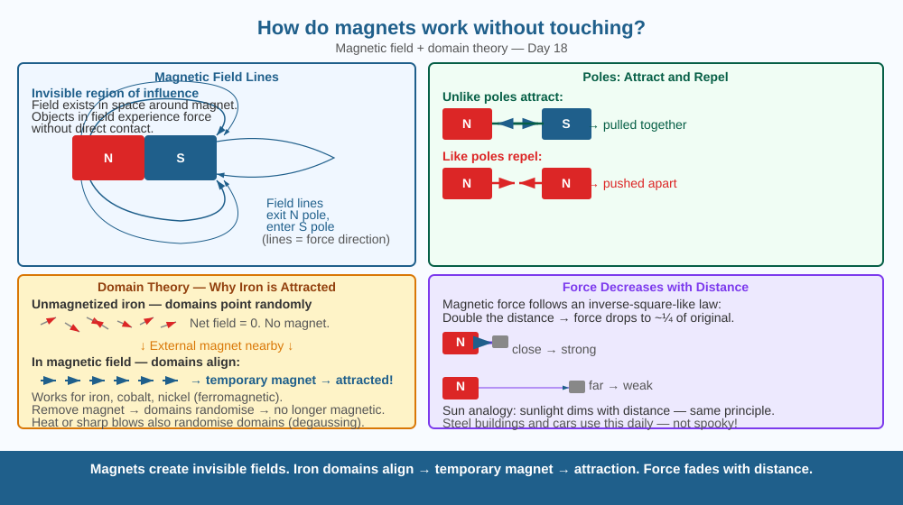

Discover why a magnet can move iron filings without touching them — and meet the invisible field that makes it possible.
Hold a magnet near an iron nail. Before they touch, the nail leaps toward the magnet. No string, no glue, no contact. Something invisible reaches through air and pulls. What is that something, and how does it work?
A magnet creates a magnetic field — an invisible region of influence that exists in the space surrounding it. This field has both strength and direction at every point. Any object that can respond to magnetism (iron, nickel, cobalt — called ferromagnetic materials) placed inside this field experiences a force.
Why does iron respond? In most materials, the tiny magnetic effects of each atom point in random directions and cancel out. In iron, groups of atoms called magnetic domains can align their magnetic effects in the same direction. When you bring a magnet close, its field forces these domains to line up — the whole iron object temporarily becomes a magnet with its south pole facing the magnet's north. Opposite poles attract → the nail is pulled in.
Field rules: - Field lines go from N pole to S pole outside the magnet. - Lines crowd together near the poles (strong field) and spread apart in the middle (weaker field). - Like poles repel, unlike poles attract — always. - The force gets weaker as distance increases. Double the distance → force drops to about one-quarter.
Think of the magnet as the Sun and the magnetic field as sunlight. Just as sunlight spreads in all directions from the Sun and exerts pressure on dust particles, the magnetic field spreads in all directions from the magnet and exerts force on iron particles. You can't see sunlight traveling through space, but you know it's there because it affects things (warms your skin, makes plants grow). Similarly, you can't see the magnetic field, but you know it's there because it moves iron filings.

The diagram shows a bar magnet (N pole red, S pole blue) with field lines arching from N to S outside the magnet and shown as curves through the interior. Iron filings pattern reproduced around the magnet shows the lines of force. Two magnets — one repelling (N facing N) and one attracting (N facing S) — are shown with field line patterns changing between the poles.
Sprinkle iron filings on a sheet of paper placed over a bar magnet. Tap the paper gently. The filings jump into curved patterns — you are literally seeing the magnetic field lines made visible. Notice: lines crowd near the poles (strong force there), spread out in the middle. Now bring a second magnet underneath, north facing the first magnet's north — filings rearrange to show the repulsion gap between them.
An electromagnet is a coil of wire carrying current. When the current flows, a magnetic field appears; switch it off, the field vanishes. Cranes in scrapyards use electromagnets instead of permanent magnets — why? What advantage does an on/off magnet have over a permanent one? And if moving electric charges create magnetic fields, does a stationary electric charge have a magnetic field?
What is the mechanism that allows magnets to attract or repel objects without physical contact?
Why is understanding magnetic fields more useful than knowing that magnets attract iron?
If you increased the distance between two attracting magnets, what would you predict would happen to the force between them?
A steel paper clip is not magnetic by itself. But after you stroke it 20 times with one pole of a magnet (all strokes in the same direction), it picks up other paper clips. Explain what happened inside the steel using the domain theory. Then explain why leaving the magnetised clip near another strong magnet for a week might cause it to lose its magnetism.
Magnets don't "use up" their magnetism just by attracting and releasing iron objects. A permanent magnet can attract and release a paper clip billions of times without growing weaker. But hammering a magnet, heating it above a critical temperature (the Curie point — for iron, about 770°C), or dropping it hard on the floor will demagnetise it instantly — the shock scrambles the aligned domains back to random orientations. A magnet is essentially an arrangement of information stored in its crystal structure.
Magnets create a magnetic field — an invisible region of force — without touching. Field strength decreases with distance. Iron is attracted because its internal domains align with the external field. Like poles repel, unlike poles attract.